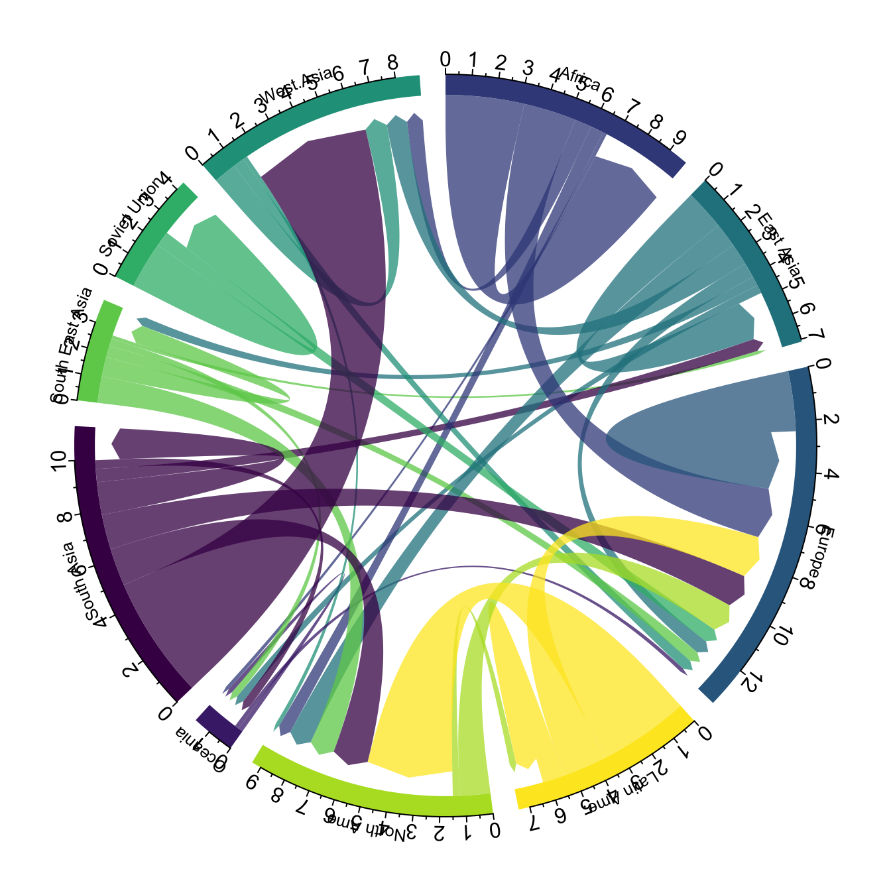

Chord diagram
definition - mistake - related - code
A chord diagram represents flows or connections between several entities (called nodes). Each entity is represented by a fragment on the outer part of the circular layout. Then, arcs are drawn between each entities. The size of the arc is proportional to the importance of the flow.
Here is an example displaying the number of people migrating from one country to another. Data used comes from this scientific publication from Gui J. Abel.
# Libraries
library(tidyverse)
library(viridis)
library(patchwork)
library(hrbrthemes)
library(circlize)
library(chorddiag) #devtools::install_github("mattflor/chorddiag")
# Load dataset from github
data <- read.table("https://raw.githubusercontent.com/holtzy/data_to_viz/master/Example_dataset/13_AdjacencyDirectedWeighted.csv", header=TRUE)
# short names
colnames(data) <- c("Africa", "East Asia", "Europe", "Latin Ame.", "North Ame.", "Oceania", "South Asia", "South East Asia", "Soviet Union", "West.Asia")
rownames(data) <- colnames(data)
# I need a long format
data_long <- data %>%
rownames_to_column %>%
gather(key = 'key', value = 'value', -rowname)
# parameters
circos.clear()
circos.par(start.degree = 90, gap.degree = 4, track.margin = c(-0.1, 0.1), points.overflow.warning = FALSE)
par(mar = rep(0, 4))
# color palette
mycolor <- viridis(10, alpha = 1, begin = 0, end = 1, option = "D")
mycolor <- mycolor[sample(1:10)]
# Base plot
chordDiagram(
x = data_long,
grid.col = mycolor,
transparency = 0.25,
directional = 1,
direction.type = c("arrows", "diffHeight"),
diffHeight = -0.04,
annotationTrack = "grid",
annotationTrackHeight = c(0.05, 0.1),
link.arr.type = "big.arrow",
link.sort = TRUE,
link.largest.ontop = TRUE)
# Add text and axis
circos.trackPlotRegion(
track.index = 1,
bg.border = NA,
panel.fun = function(x, y) {
xlim = get.cell.meta.data("xlim")
sector.index = get.cell.meta.data("sector.index")
# Add names to the sector.
circos.text(
x = mean(xlim),
y = 3.2,
labels = sector.index,
facing = "bending",
cex = 0.8
)
# Add graduation on axis
circos.axis(
h = "top",
major.at = seq(from = 0, to = xlim[2], by = ifelse(test = xlim[2]>10, yes = 2, no = 1)),
minor.ticks = 1,
major.tick.percentage = 0.5,
labels.niceFacing = FALSE)
}
)
Note: this plot is made using the circlize library, and very strongly inspired from the Migest package from Gui J. Abel. Read more about this story here.
Chord diagrams are eye catching and quite popular in data visualization. They allow to visualize weigthed relationships between several entities. They are adapted for several specific situations that slightly modify the output and the way to read them:
Flow. This is the example decribed in the chord diagram above. But two ways to represent it:
Bipartite: nodes are grouped in a few categories. Connections go between categories but not within categories. In my opinion sankey diagrams are more adapted in this situation.
Note: this section is under construction.
Interactivity is a real plus to make the chord diagram understandable. In the example below, you can hover a specific group to highlight all its connections.
library(chorddiag)
m <- matrix(c(11975, 5871, 8916, 2868,
1951, 10048, 2060, 6171,
8010, 16145, 8090, 8045,
1013, 990, 940, 6907),
byrow = TRUE,
nrow = 4, ncol = 4)
haircolors <- c("black", "blonde", "brown", "red")
dimnames(m) <- list(have = haircolors,
prefer = haircolors)
groupColors <- c("#000000", "#FFDD89", "#957244", "#F26223")
chorddiag(m, groupColors = groupColors, groupnamePadding = 20)Note: this example comes from the chorddiag package documentation.
The R and Python graph galleries are 2 websites providing hundreds of chart example, always providing the reproducible code. Click the button below to see how to build the chart you need with your favorite programing language.
R graph gallery Python gallery
Any thoughts on this? Found any mistake? Disagree? Please drop me a word on twitter or in the comment section below:
A work by Yan Holtz for data-to-viz.com